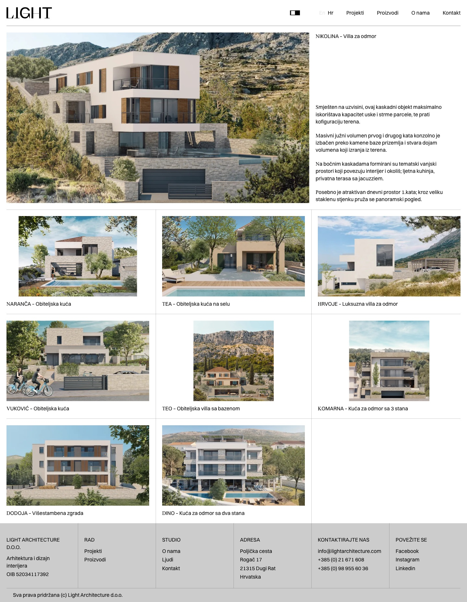
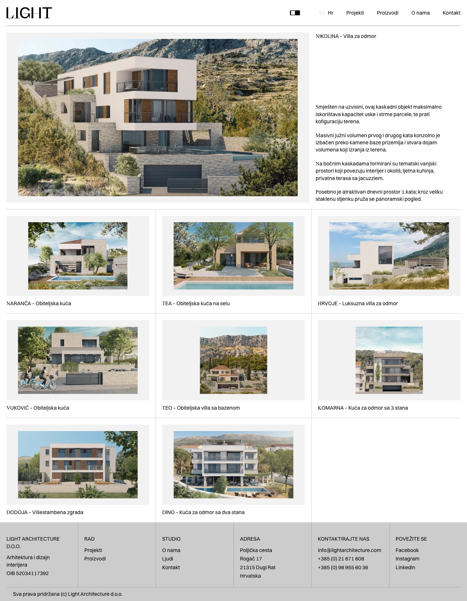
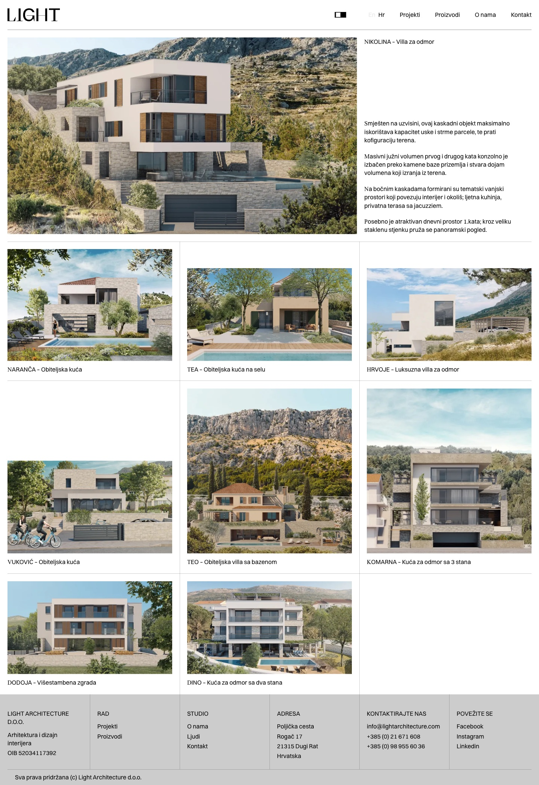

Naslovna stranica: kako prikazati cijele slike
Trenutna situacija
Svaka slika je izrezana da popuni okvir 16:9. Kod Narance (3:2), Tea i Komarne (kvadratne slike) odrezan je dio slike. Ostalih sest su vec 16:9.

1. Cijela slika na bijelom
Okvir 16:9 ostaje, a slika se smanji da stane cijela, na sredini. Ostatak okvira je bijel, kao pozadina stranice.

2. Cijela slika na sivom
Isto kao 1, ali je okvir svijetlosiv i oko slike je rub od 20 px. Sve slike imaju taj sivi okvir, pa izgledaju ujednaceno.

3. Prirodna visina
Nema fiksnog okvira, svaka slika ima svoj omjer. Visina reda ide po najvisoj slici, a slike i nazivi su poravnati na dnu reda. Linije mreze ostaju gdje jesu.

4. Mutna pozadina
Cijela slika je na sredini okvira 16:9, a prazne strane popunjava ista slika, uvecana i zamucena.

5. Druga slika projekta
Raspored ostaje isti. Za naslovnu sliku uzima se prva slika projekta koja je 16:9, pa nista ne treba rezati. Naranca, Teo i Komarna dobiju svoju drugu sliku. Nove slike koje nisu 16:9 i dalje bi se rezale.

6. Na sivom, slika lijevo
Isto kao 2, ali je slika uz lijevi rub umjesto na sredini, pa je poravnata s nazivom ispod.